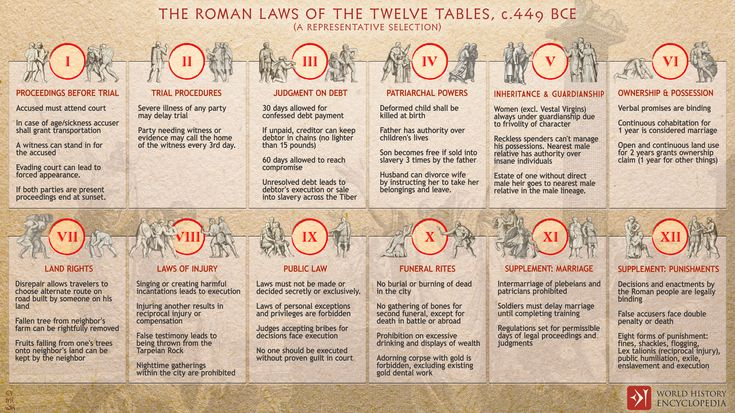
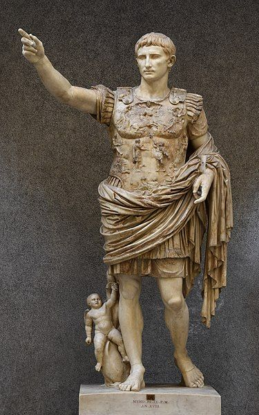

The Roman Republic
The Roman Republic was one of the most influential political systems of the ancient world. Established in 509 BC after the overthrow of Rome's final king, it replaced monarchy with a government led by elected officials, powerful assemblies, and the Roman Senate. Over nearly five centuries, the Republic transformed Rome from a relatively small city-state in central Italy into the dominant power of the Mediterranean, laying the foundations for what would later become the Roman Empire.
The Republic was characterized by a complex system of shared authority intended to prevent any one individual from gaining absolute power. Citizens elected magistrates to administer the state, while the Senate advised on foreign policy, finances, military affairs, and legislation. Although political participation was largely limited to male citizens and social inequality remained significant, the Republic introduced ideas of civic duty, public service, and constitutional government that influenced later political systems throughout history.
The Republic also witnessed some of the most significant events in Roman history, including the conquest of Italy, the Punic Wars against Carthage, the expansion into Greece and the eastern Mediterranean, the rise of influential generals such as Scipio Africanus and Julius Caesar, and the civil wars that ultimately brought republican government to an end.
The Birth of the Roman Republic
According to Roman tradition, the Republic began in 509 BC after the removal of the final Roman king, Lucius Tarquinius Superbus, commonly known as Tarquin the Proud. His reign was remembered by later Roman historians as harsh and tyrannical. The immediate cause of the revolution was the outrage surrounding the assault of the noblewoman Lucretia, whose death inspired leading Romans to overthrow the monarchy and establish a new form of government.
Instead of concentrating power in the hands of a king, the Romans created a political system that distributed authority among several institutions. Executive power was shared by two elected consuls, each serving a one-year term. This arrangement ensured that no single individual could dominate the state, as each consul possessed the authority to veto the other's decisions.
The establishment of the Republic marked a significant turning point in Roman history. It introduced a government that emphasized public service, civic responsibility, and the rule of law. Although the Republic was not democratic in the modern sense, it represented an important departure from monarchy and became the foundation for Rome's remarkable expansion over the following centuries.

Figure 1. The End of the Roman Monarchy
Suggested Image:
Historical artwork depicting the expulsion of Tarquin the Proud or the founding of the Republic.
Search:
Expulsion of Tarquin the Proud Wikimedia Commons
Government of the Roman Republic
The Roman Republic developed one of the most sophisticated political systems of the ancient world. Rather than placing all authority in a single ruler, power was divided among elected officials, popular assemblies, and the Senate. This balance helped maintain political stability for centuries, although competition between powerful families and ambitious leaders frequently created tension.
Roman citizens participated in public life by voting in assemblies that elected magistrates and approved certain laws. However, voting rights were not equally distributed, and wealthier citizens often exercised greater influence. Despite these limitations, the Republic introduced important concepts of constitutional government that inspired later political systems.
Key Principles
- Annual elections
- Shared political authority
- Checks on executive power
- Rule of law
- Civic responsibility
- Public service
Main Institutions
- The Senate
- Two Consuls
- Popular Assemblies
- Praetors
- Quaestors
- Censors
- Tribunes of the Plebs
The Roman Senate
The Roman Senate was the most influential political institution of the Republic. Although it did not officially create laws in the same way as the popular assemblies, its advice, decisions, and recommendations carried enormous authority. Composed primarily of experienced former magistrates from Rome's leading families, the Senate directed foreign policy, supervised public finances, managed state religion, and advised military commanders during times of war.
Membership in the Senate was considered one of the highest honours a Roman citizen could achieve. Senators debated important issues affecting the Republic, including declarations of war, diplomatic relations, taxation, provincial administration, and public construction projects. While magistrates changed every year, the Senate provided continuity and long-term experience, making it the central institution of Roman government for centuries.
Despite its prestige, the Senate often became the centre of political rivalry. Powerful senators competed for influence, formed alliances, and occasionally blocked reforms proposed by political opponents. These struggles became increasingly intense during the final century of the Republic, contributing to political instability.

Figure 2. Meeting of the Roman Senate
Suggested Image:
Historical painting or reconstruction showing senators gathered inside the Curia.
Search:
Roman Senate Curia reconstruction Wikimedia Commons
Magistrates and Public Offices
The Republic relied on elected officials known as magistrates to administer the government. Each office carried specific duties, and most positions were held for only one year. This limited the accumulation of personal power and encouraged accountability to the Roman people.
Young politicians generally advanced through a sequence of public offices known as the cursus honorum, or "course of honours." Success required military service, political skill, and public support. By progressing through these offices, Roman citizens gained administrative experience before seeking higher positions.
| Office | Main Responsibilities |
|---|---|
| Consuls | Highest elected officials; commanded armies, presided over the Senate, and supervised government administration. |
| Praetors | Administered justice and acted as judges or military commanders when required. |
| Quaestors | Managed public finances, treasury records, and military accounts. |
| Aediles | Maintained public buildings, markets, roads, festivals, and grain supplies. |
| Censors | Conducted the census, supervised public morality, and reviewed Senate membership. |
| Tribunes of the Plebs | Protected the rights of plebeians and possessed the power to veto certain government decisions. |
Interesting Fact
Most Roman magistrates served without receiving a salary. Public office was viewed as a civic responsibility and an opportunity to gain honour, prestige, and political influence rather than personal income.
The Conflict of the Orders
During the early Republic, Roman society remained deeply divided between two principal social groups: the patricians, who belonged to wealthy aristocratic families, and the plebeians, who represented the majority of free Roman citizens. Although plebeians served in the army, paid taxes, and contributed to Rome's economy, they initially possessed fewer political rights than the patricians.
This imbalance led to a long political struggle known as the Conflict of the Orders, lasting from approximately 494 BC to 287 BC. Plebeians organized peaceful protests, refused military service at times, and demanded greater political representation. Through gradual reforms, they secured the right to elect their own officials, known as the Tribunes of the Plebs, who could veto decisions that threatened plebeian interests.
One of the most significant achievements of this period was the creation of the Twelve Tables, Rome's first written legal code. Displayed publicly, these laws ensured that legal procedures were no longer known only to the aristocracy, making justice more transparent for Roman citizens.
Patricians
- Noble families
- Large landowners
- Dominated early politics
- Held many religious offices
Plebeians
- Farmers
- Merchants
- Craftsmen
- Soldiers
- Gradually gained political rights

Figure 3. The Twelve Tables
Suggested Image:
An artistic representation or museum exhibit of the Twelve Tables.
Search:
Twelve Tables Roman law Wikimedia Commons
Expansion Across Italy
During the fourth and third centuries BC, the Roman Republic steadily expanded beyond the city of Rome and gradually brought most of the Italian Peninsula under its control. This expansion was achieved through a combination of military campaigns, strategic alliances, diplomacy, and the establishment of Roman colonies. Rather than ruling every conquered community in the same way, Rome often allowed local governments to continue operating while requiring loyalty, military service, and cooperation with the Republic.
One of Rome's greatest strengths was its ability to integrate conquered peoples into its political system. Some communities received full Roman citizenship, while others were granted partial rights or became allied states. This flexible approach created a network of allies that supplied soldiers and resources, greatly strengthening Rome's military power.
Roman engineers also played a vital role in expansion by constructing durable roads that connected cities, military camps, and trading centres. These roads allowed armies to move rapidly across Italy, improved communication, encouraged commerce, and strengthened Roman authority throughout the peninsula.
Key Achievement
By approximately 265 BC, Rome had established dominance over nearly the entire Italian Peninsula, placing it in direct competition with other powerful Mediterranean states, especially Carthage.

Figure 4. Roman Expansion in Italy
Suggested Image:
Historical map showing Rome's territorial growth before the Punic Wars.
Search:
Roman Republic Italy map Wikimedia Commons
The Punic Wars
The Punic Wars were a series of three major conflicts fought between the Roman Republic and the powerful North African city of Carthage between 264 BC and 146 BC. These wars determined which state would dominate the western Mediterranean and are considered among the most important conflicts of the ancient world.
Carthage possessed one of the strongest navies of its time and controlled extensive trade networks throughout the Mediterranean. Rome, meanwhile, had become the dominant power in Italy and sought to protect its growing interests overseas. Competition between these two expanding powers eventually led to open warfare.
The First Punic War (264–241 BC)
The First Punic War began over control of the island of Sicily. Since Carthage had superior naval forces, Rome built a powerful fleet almost from scratch. Through determination, innovation, and several hard-fought victories, the Romans defeated Carthage and gained control of Sicily, which became Rome's first overseas province.
The Second Punic War (218–201 BC)
The Second Punic War is remembered for the remarkable campaigns of the Carthaginian general Hannibal Barca. In one of history's greatest military achievements, Hannibal led his army—including war elephants—across the Alps into Italy. He won several spectacular victories against Roman armies, including the famous Battle of Cannae in 216 BC.
Despite these successes, Hannibal was unable to capture Rome itself. The Roman general Scipio Africanus eventually carried the war into North Africa, forcing Hannibal to return home. At the decisive Battle of Zama in 202 BC, Scipio defeated Hannibal, ending Carthage's position as Rome's greatest rival.
The Third Punic War (149–146 BC)
The Third Punic War ended with the complete destruction of Carthage. After a lengthy siege, Roman forces captured the city in 146 BC. Carthage was destroyed, its territory became a Roman province, and Rome emerged as the dominant power throughout the western Mediterranean.
| War | Years | Result |
|---|---|---|
| First Punic War | 264–241 BC | Rome gained Sicily. |
| Second Punic War | 218–201 BC | Scipio defeated Hannibal at Zama. |
| Third Punic War | 149–146 BC | Carthage was destroyed. |

Figure 5. Hannibal Crossing the Alps
Suggested Image:
Painting depicting Hannibal leading his army and elephants across the Alps.
Search:
Hannibal crossing the Alps Wikimedia Commons

Figure 6. The Battle of Zama
Suggested Image:
Historical artwork illustrating Scipio Africanus defeating Hannibal.
Search:
Battle of Zama Wikimedia Commons
Did You Know?
Hannibal's march across the Alps with thousands of soldiers, horses, and war elephants remains one of the most remarkable military campaigns in history. Despite difficult terrain and harsh weather, his army successfully entered Italy and won several major victories against Rome.
Julius Caesar and the Crisis of the Republic
By the first century BC, the Roman Republic faced increasing political instability. Military victories had brought enormous wealth and vast new territories, but they also widened the gap between rich and poor. Powerful generals gained the loyalty of their soldiers, political violence became more common, and competition for influence within the Senate intensified. These challenges weakened the republican system that had governed Rome for centuries.
One of the most influential figures of this period was Gaius Julius Caesar. Born into a patrician family, Caesar distinguished himself as a soldier, politician, and writer. His conquest of Gaul between 58 BC and 50 BC greatly expanded Roman territory and earned him immense popularity among both the army and the Roman people.
As Caesar's influence grew, tensions developed between him and the Senate, particularly with the general Pompey the Great. The Senate ordered Caesar to surrender his command and return to Rome as a private citizen. Instead, in 49 BC, Caesar crossed the Rubicon River with his army—an act considered a declaration of civil war.
Following several military victories, Caesar became the dominant leader of Rome and was appointed dictator for life in 44 BC. While many admired his reforms, others feared that he intended to become king and permanently end the Republic.

Figure 7. Julius Caesar
Suggested Image:
Marble bust of Julius Caesar.
Search:
Julius Caesar bust Wikimedia Commons
The Fall of the Roman Republic
On 15 March 44 BC, a date remembered as the Ides of March, Julius Caesar was assassinated by a group of senators led by Marcus Junius Brutus and Gaius Cassius Longinus. The conspirators believed that removing Caesar would preserve the Republic and prevent the establishment of a monarchy.
Instead of restoring political stability, Caesar's death triggered another series of civil wars. His adopted heir Octavian formed the Second Triumvirate with Mark Antony and Lepidus to defeat Caesar's assassins. Although they initially cooperated, rivalry soon developed between Octavian and Antony.
The decisive moment came at the Battle of Actium in 31 BC, where Octavian defeated the combined forces of Mark Antony and Queen Cleopatra VII of Egypt. Four years later, in 27 BC, the Senate granted Octavian the title Augustus. Historians traditionally regard this event as the beginning of the Roman Empire and the end of the Roman Republic.
The End of an Era
Although republican institutions such as the Senate continued to exist, real political authority increasingly rested with Augustus and the emperors who followed him.

Figure 8. The Ides of March
Suggested Image:
Historical painting of the assassination of Julius Caesar.
Search:
Death of Julius Caesar painting Wikimedia Commons
Timeline of the Roman Republic
| Year | Event |
|---|---|
| 509 BC | Roman Republic established after the overthrow of Tarquin the Proud. |
| 451–450 BC | The Twelve Tables become Rome's first written laws. |
| 390 BC | Rome is attacked and occupied by the Gauls. |
| 264–146 BC | The Three Punic Wars are fought against Carthage. |
| 202 BC | Scipio Africanus defeats Hannibal at the Battle of Zama. |
| 58–50 BC | Julius Caesar conquers Gaul. |
| 49 BC | Caesar crosses the Rubicon. |
| 44 BC | Julius Caesar is assassinated. |
| 31 BC | Battle of Actium. |
| 27 BC | Augustus becomes Rome's first emperor. |
The Legacy of the Roman Republic
Although the Republic eventually gave way to imperial rule, its institutions and political ideas left a lasting mark on history. The concepts of elected officials, written laws, civic responsibility, checks on authority, and public debate influenced later governments across Europe and the Americas. Many constitutional systems continue to reflect principles first developed during the Roman Republic.
Roman law also became one of the Republic's greatest contributions to world history. Its legal traditions shaped civil law systems that remain influential today, while the Republic's emphasis on citizenship and public service inspired political thinkers for centuries.
Government
Ideas of representative institutions and divided political authority influenced many later constitutions.
Law
Roman legal principles continue to shape courts and legal systems around the world.
Citizenship
The Republic emphasized civic duty, public service, and participation in government.
Historical Gallery

Roman Forum
Search: Roman Forum Wikimedia Commons

Scipio Africanus
Search: Scipio Africanus bust Wikimedia Commons

Augustus
Search: Augustus Prima Porta Wikimedia Commons
Continue to the Roman Empire
The Republic laid the foundations for one of the greatest empires in history. Continue to the next section to explore how Augustus transformed Rome into the Roman Empire, the Pax Romana, famous emperors, territorial expansion, and the eventual decline of imperial rule.
Explore the Roman Empire →